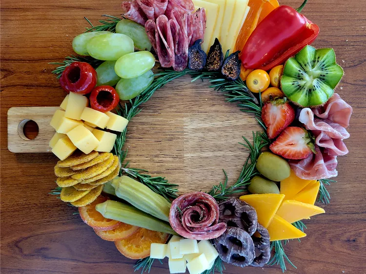

Christmas Wreath Charcuterie Board

This Christmas wreath charcuterie board is a fun board to make for any holiday gathering. I found it easier to make if the board is round, but a square or rectangular board is fine if that is what you have. Add all your favorite charcuterie fixins—just use the photo as your guide—and it will be a hit! All amounts listed for this recipe are approximate.
Ingredients
- 10 ounces assorted cured meats, such as salami, pepper salami, prosciutto
- several sweet mini peppers, cut in half, seeds and stems removed
- 10 ounces fresh fruit, such as grapes, kiwi, gooseberries, and strawberries
Steps
- Arrange ingredients in a circle on a board, using the photo as a guide, and working from the outer edge in. Leave a circular area at the center open.
- Once you are satisfied with the placement of ingredients, line the center circle with rosemary sprigs, and tuck in a few around the outer edge to give it the look of a wreath.